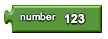
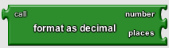

Math Blocks
- number
- >
- <
- <=
- >=
- equals
- +
- −
- ×
- /
- sqrt
- random fraction
- random integer
- random set seed
- negate
- min
- max
- quotient
- remainder
- modulo
- abs
- round
- floor
- ceiling
- expt
- exp
- log
- sin
- cos
- tan
- asin
- acos
- atan
- atan2
- format as decimal
- is a number?
number
Specifies a numeric value.
>
Compares two given numbers. If the first is larger, returns true; otherwise, returns false.
<

Compares two given numbers. If the first is smaller, returns true; otherwise, returns false.
≤
Compares two given numbers. If the first is smaller than or equal to the second, returns true; otherwise, returns false.
≥

Compares two given numbers. If the first is greater than or equal to the second, returns true; otherwise, returns false.
equals

Tests whether two given values are equal. If so, returns true; otherwise, returns false. This is the same as the block in the logic drawer and is repeated here for convenience. The arguments can be anything, not just numbers.
+

Returns the sum of two given numbers.
−
Returns the result of subtracting the second number from the first.
×

Returns the product of two given numbers.
/

Returns the result of dividing the first number by the second. For example, 1 divided by 3 is 0.3333.
sqrt

Returns the square root of the given number.
random fraction
Returns a random value between 0 and 1.
random integer
Returns a random integer value between the given values, inclusive. The order of the arguments doesn't matter.
random set seed
Use this block to generate repeatable sequences of random numbers. You can generate
the same sequence of random numbers by first calling
random set seed
with the same value. This is useful for testing programs that involve random
values.
negate

Returns the negative of the given number.
min
Returns the smallest of a given set of numbers.
max

Returns the largest of a given set of numbers.
quotient
Returns the result of dividing the first number by the second and discarding any fractional part of the result.
remainder

Remainder(a,b) returns the result of dividing a by b and taking the remainder. For example, remainder(11,5) = 1, remainder(-11, 5) = -1, remainder(11, -5) = 1, and remainder(-11, -5) = -1.
modulo
Modulo(a,b) is the same as remainder(a,b) when a and b are positive. More generally, modulo(a,b) is defined for any a and b so that (floor(a/b)× b) + modulo(a,b) = a. For example, modulo(11, 5) = 1, modulo(-11, 5) = 4, modulo(11, -5) = -4, modulo(-11, -5) = -1. Modulo(a,b) always has the same sign as b, while remainder(a,b) always has the same sign as a.
abs

Returns the absolute value of the given number.
round

Rounds the given number to the nearest integer and returns the result. If the number is midway between two integers, rounds to the even integer.
floor

Calculates the greatest integer that's less than or equal to the given number.
ceiling
Returns the smallest integer that's greater than or equal to the given number.
expt

Raises the first given number to the power of the second and returns the result.
exp
Returns e (2.71828...) raised to the power of the given number and returns the result.
log

Returns the natural logarithm of the given number.
sin
Returns the sine of the given number in degrees.
cos
Returns the cosine of the given number in degrees.
tan
Returns the tangent of the given number in degrees.
asin
Returns the arcsine of the given number in degrees.
acos

Returns the arccosine of the given number in degrees.
atan
Returns the arctangent of the given number in degrees.
atan2

Returns the arctangent of y/x, given y and x.
format as decimal
Format a number as a decimal with a given number of places after the decimal point. The number of places must be a non-negative integer. The result is produced by rounding the number (if there were too many places) or by adding zeros on the right (if there were too few).
is a number?

Returns true if the given object is a number, and false otherwise.